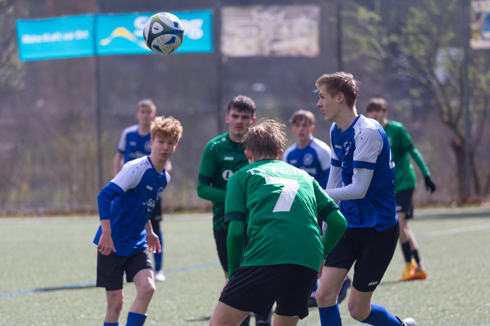
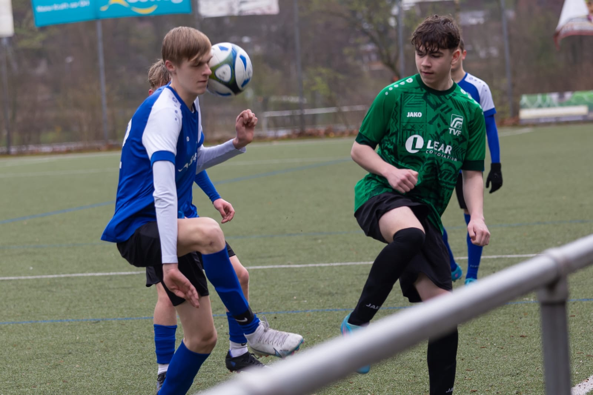
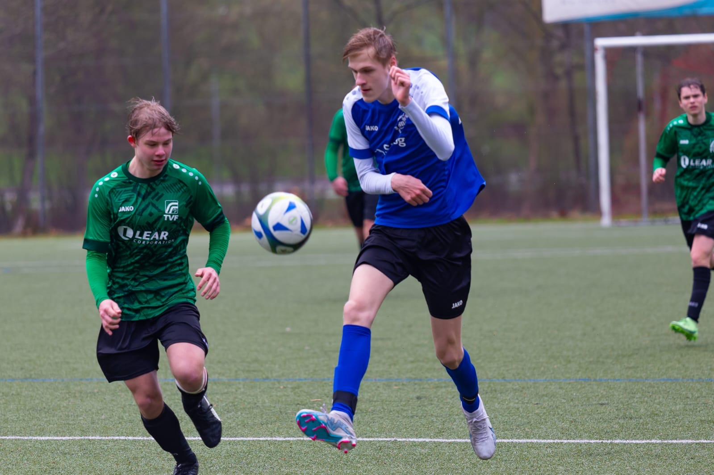
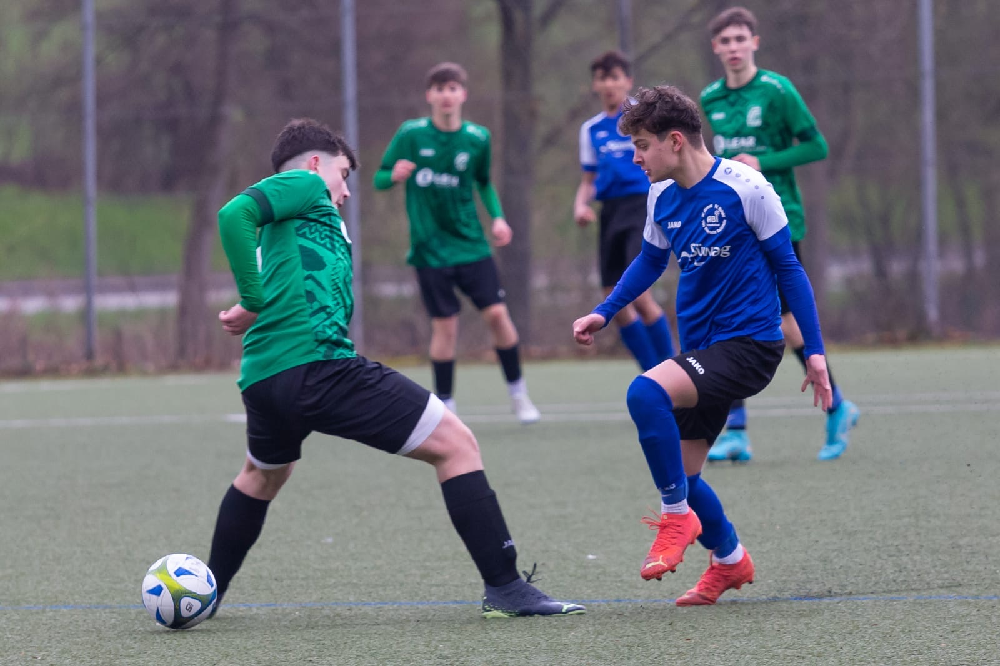
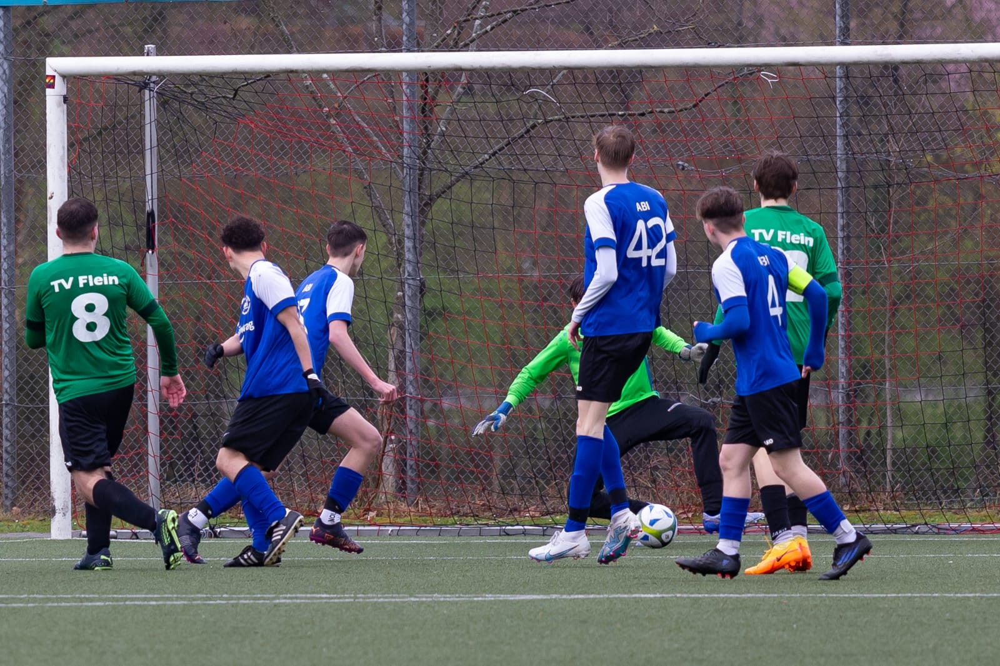
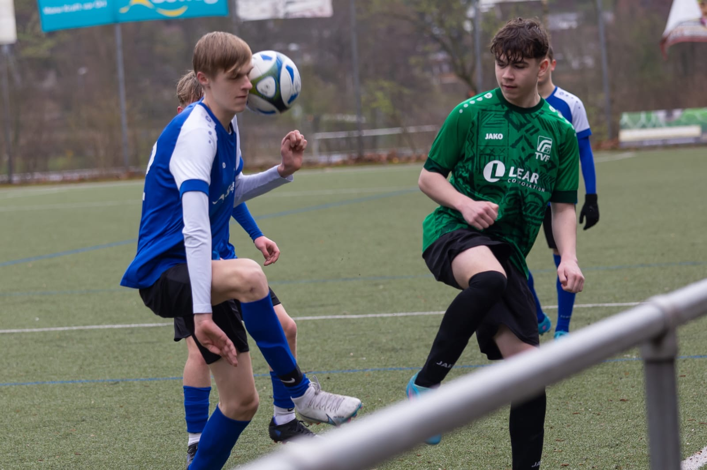
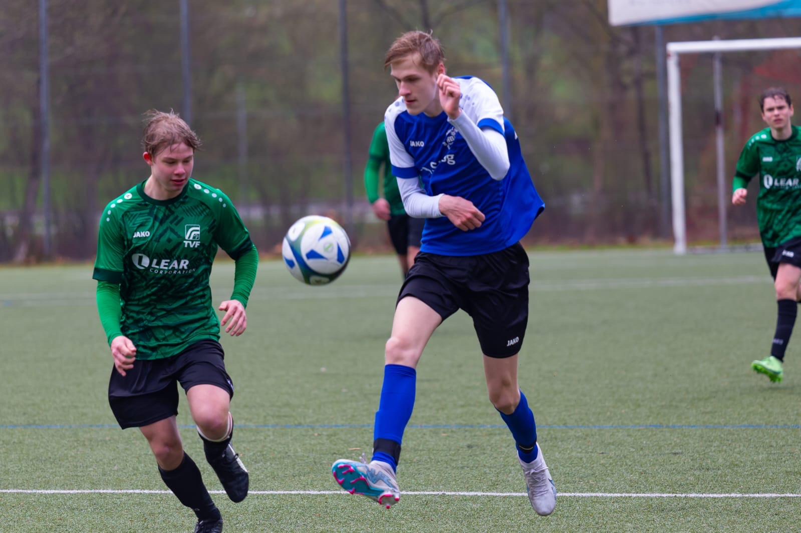
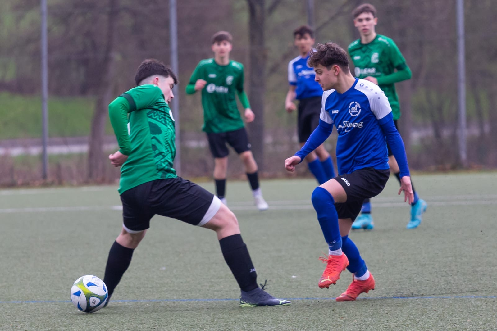
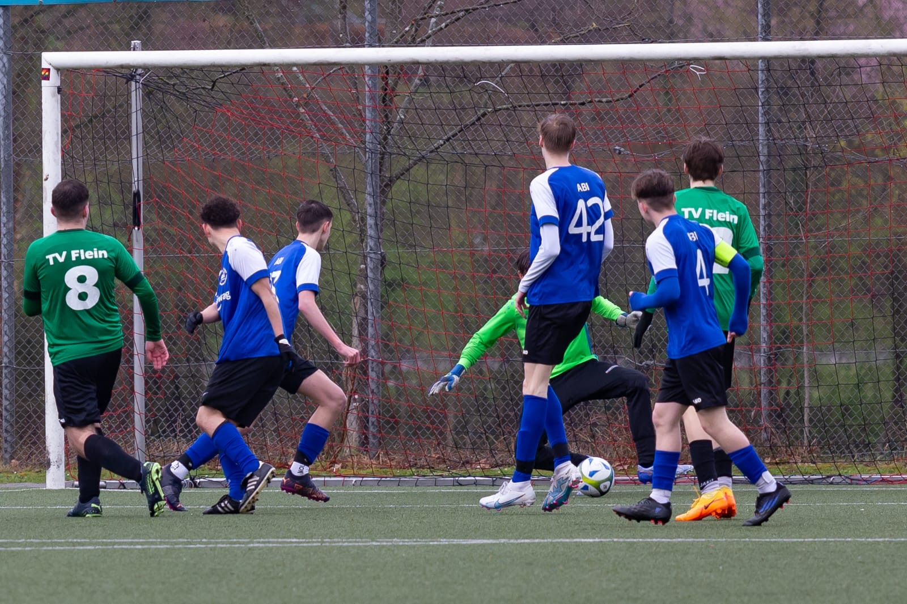

SGM-ABI B-Junioren
SGM-ABI B1 gegen TV Flein 1:2
 Gegen den erwartet spielstarken Gegner aus Flein tat man sich speziell in der Ersten Halbzeit sehr schwer. Und so
ging das zwischenzeitlich 0:2 soweit auch in Ordnung. In der zweiten Halbzeit gelang es uns auch selbst dann
spielerisch Lösungen zu finden und wir konnten vermehrt Druck auf das Fleiner Tor ausüben was dann auch zum 1:2
führte. Eine riesen Chance von Jaris wurde dann noch quasi von einem Fleiner weggebeamt jeder sah den Ball bereits
im Tor. Fazit ein unentschieden hätte sicherlich den spielverlauf korrekt wiedergegeben, aber die Möglichkeit auch
bereits in Halbzeit eins das eigene spiel effektiver zu Gestalten besteht im Rückspiel in Flein.
Gegen den erwartet spielstarken Gegner aus Flein tat man sich speziell in der Ersten Halbzeit sehr schwer. Und so
ging das zwischenzeitlich 0:2 soweit auch in Ordnung. In der zweiten Halbzeit gelang es uns auch selbst dann
spielerisch Lösungen zu finden und wir konnten vermehrt Druck auf das Fleiner Tor ausüben was dann auch zum 1:2
führte. Eine riesen Chance von Jaris wurde dann noch quasi von einem Fleiner weggebeamt jeder sah den Ball bereits
im Tor. Fazit ein unentschieden hätte sicherlich den spielverlauf korrekt wiedergegeben, aber die Möglichkeit auch
bereits in Halbzeit eins das eigene spiel effektiver zu Gestalten besteht im Rückspiel in Flein.
Am Ball waren: Jaris, Beni, Fabian, Juan, Florian, Peter, Noah, Florin, Jonas, Felix, Paul, Robin. Georg und Kaan an der Seitenlinie.
SGM-ABI B2 gegen VFL Obereisesheim 1:7 (0:4)
 Das es im Fußball mal schnell gehen kann, ähnlich wie im Handball dies war heute der Fall. In einem großen spiel erreicht man Mittwochs das Pokalhalbfinale, und irgendwie wirkte sich dies noch Tage später aus. Man konnte das Spiel in den Ersten 25 Min. offen gestalten, wobei der VFL die zwingen deren Aktionen setzen konnte. Und auf einmal ging es Schlag auf Schlag innerhalb von 9 Minuten kassierten wir 4 Tore. Bis auf das 2:0 Hammer Eckball mit Wahnsinns Kopfballtor waren alle auch von uns mitverursacht. Zur Halbzeit 2 stellten wir die Positionen um und hatten sogleich zwei sehr gute Torchancen die wir nicht nutzten und direkt im Gegenzug in de 43 Min das 5:0 und in der 46 Min das 6:0 kassierten. Danach kamen wir wieder besser ins spiel und dazu Hut ab Kopf nicht hängen gelassen und Jahir in der 63 Min zum 1:6 und wir hatten noch Möglichkeiten 2-3 Tore zu schießen und kassierten aber leider quasi mit dem Schlusspfiff das 1:7. Der Sieg für den VFL geht vollkommen in Ordnung eventuell 2 Tore zu hoch.
Was wir gemerkt haben es ist unheimlich wichtig das möglichst alle 2x die Woche trainieren das wir zum Spiel möglichst nicht nur mit 12 Mann, sondern einer vollbesetzten Bank anreisen. Die Gegner hatten dieses und waren zu 1/3 bereits schon das 2 Jahr in der B Jugend.
Am Ball waren: Samuel, Jahir, Timo, Joris, Omar, Marvin, Luis, Samet, Christian, Tugra, Alpay, Sandokan. Wolfgang an der Seitenlinie


 






